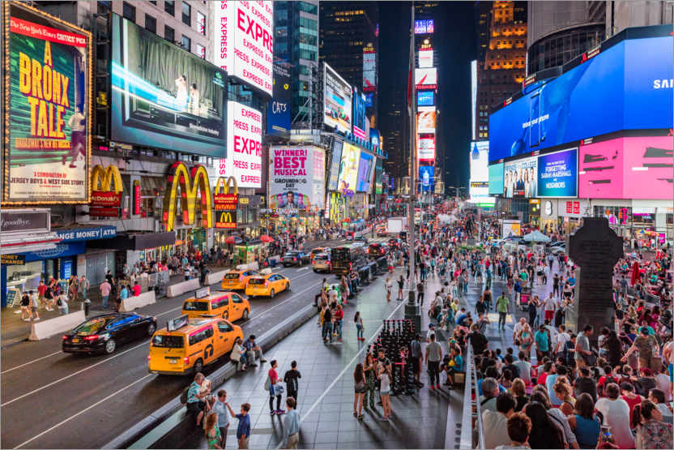
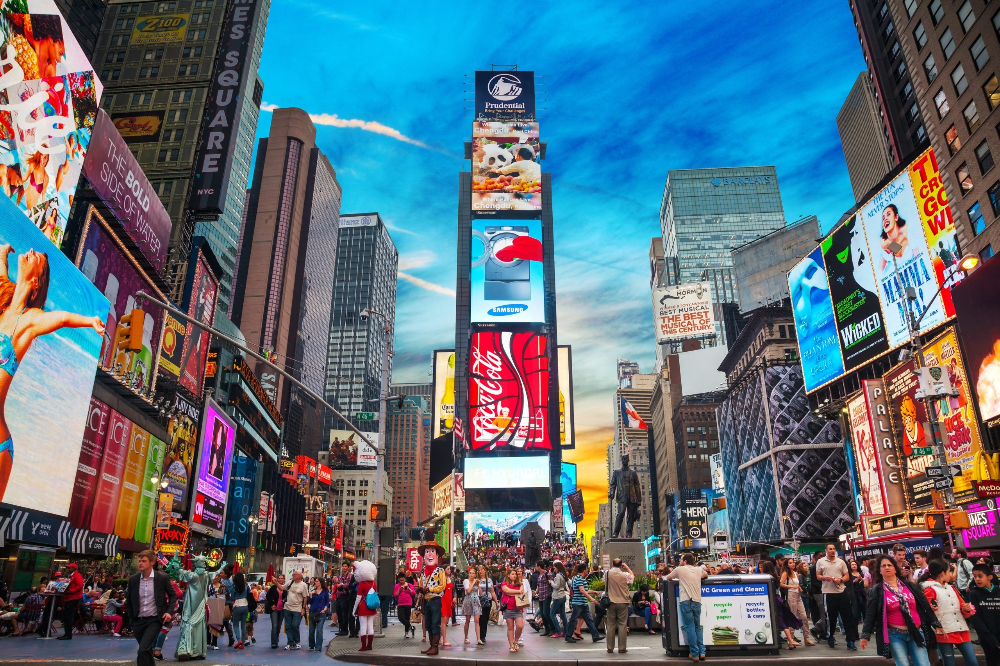

Times Square to jedno z najlepiej rozpoznawalnych miejsc świata. To miejsce-legenda, plac w sercu Nowego Jorku, który nigdy nie zasypia. Ilością neonów konkurować może z Las Vegas, a miejskie legendy głoszą, że niezależnie od kierunku, w który pójdziesz będąc w Nowym Jorku, ostatecznie i tak trafisz na Manhattan i Times Square. Nie powinno więc dziwić, że codziennie odwiedzany jest przez 300 tysięcy ludzi. Również obchody Nowego Roku w takim miejscu należą do wyjątkowo spektakularnych i są oglądane przez setki tysięcy osób na żywo i miliony przez telewizorami. Z czego wynika fenomen tego miejsca? Dlaczego to prawdopodobnie najlepsze miejsce, by pożegnać stary i przywitać Nowy Rok? Koniecznie trzeba tu przyjść po zmroku, by siedząc w ogródku którejś z knajpek chłonąć atmosferę nasyconą światłami neonów, pełną migającego blasku, krzykliwych kolorów, głośnej muzyki, klaksonów. Warto zobaczyć reklamę NASDAQ przy ulicy 43. , koszt budowy której wyniósł 37 milionów dolarów. Napis wznosi się na wysokość 36,6 m, a NASDAQ wydał 2 miliony dolarów, aby wydzierżawić teren. Można sprawdzić, czy budynki, które w filmie „King Kong” z 2005 niszczył wielki goryl, nadal tu stoją. Albo przyjrzeć się z bliska słynnemu One Times Square. To ten wąski budynek na środku każdego zdjęcia z Times Square. To właśnie na nim wyświetlany jest zegar zapowiadający nadejście Nowego Roku. Ciekawostką może być fakt, że budynek ten od lat sześćdziesiątych stoi niemal pusty. Jego właściciel zarabia na wyświetlanych reklamach ponad ćwierć miliona dolarów miesięcznie. Nie opłaca mu się wynajmować powierzchni użytkowej budynku, który wymagałby przeprowadzenia kapitalnego remontu.Co roku, w noc sylwestrową, na Times Square odbywa się uroczystość powitania Nowego Roku. Ceremonia z udziałem największych gwiazd muzycznych jest transmitowana. Ogląda ją ok. 1 mld widzów na całym świecie. Co roku w wydarzeniu tym bierze udział ok. 1 mln nowojorczyków, turystów z USA i z całego świata. Punktem kulminacyjnym jest „ball drop”, czyli opuszczenie wielkiej, świecącej kuli na wieżowcu One Times Square, z liczbą wskazującą kolejny rozpoczynający się rok. Sylwester na Times Square to również nieśmiertelny przebój Franka Sinatry “New York, New York”, fajerwerki i tony konfetti. Oficjalny początek uroczystości przypada około godziny 18:00. Jednak większość osób przychodzi wcześniej, aby zając sobie jak najdogodniejsze miejsce. Nawet jeśli nie uda się dotrzeć w pobliże sceny, to nic straconego, na całym placu stoją wielkie ekrany.

